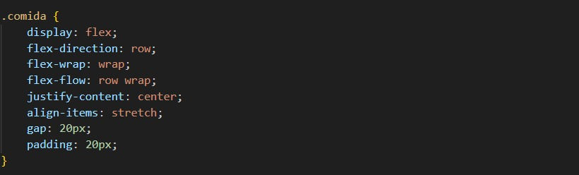

1.- Cara de Vaca
Lo considero top 1 aunque es un poco caro pero la comida y la carne es mas que 10/10, la atencion y todo aunque los precios un poco elevados diria yo.
Comer es uno de mis pasatiempos favoritos y aqui pondre un top de mis restaurantes:
Lo considero top 1 aunque es un poco caro pero la comida y la carne es mas que 10/10, la atencion y todo aunque los precios un poco elevados diria yo.
Es top 2 porque es un restaurante muy elegante y la comida italiana es muy pero muy buena y recien echa las pastas asi como las pizzas.
Muy poca gente lo conoce por la teoria del big bang donde trabajaba una protagonista de la serie pero fuera de eso, la comida esta excelente aparte de los precios muy justos y muy rico todo.
La verdad muy poca gente lo conoce pero la comida un 9/10, la atencion y el ambiente tanto la comida de la noche y los desayunos estan muy buenos y precios muy accesibles.
Esta en el 5 pero la verdad es muy vieja confiable para comer rico sushi y a reventar aparte rentable por si comes mucho.
